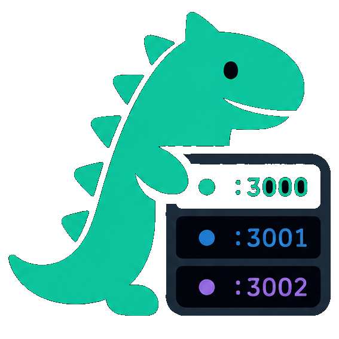

Ports
Both sessions want 3000. The second one kills the first one's dev server, and the first one's agent spends ten minutes figuring out why its process is gone.

portzilla v0.6.0A lease registry for parallel coding agents
Two agents on one repo. One port, one file, one database — and nobody agrees who owns what. portzilla gives every shared resource an owner, a journal, and a guard that makes the safe path the default one.
cargo install portzilla
$ portzilla claim 3000 --tag next-dev --pid 57107
claimed port 3000 for pid 57107 (tag: next-dev)
$ portzilla claim 3000 --tag vite-dev --pid 57108
port 3000 is busy (lease conflict);
claimed port 3001 instead
$ portzilla who 3001 --json
{"port":3001,"pid":57108,"tag":"vite-dev","alive":true}
The problem
Both sessions want 3000. The second one kills the first one's dev server, and the first one's agent spends ten minutes figuring out why its process is gone.
Two worktrees edit the same module on different branches. The merge conflict surfaces hours later, when neither agent remembers what it was doing.
The same database takes both migrations. The same target/ serialises both builds behind Cargo's lock.
Three layers
Every layer answers the same thing: who owns this right now? Only what the resource is — and how the guard enforces it — changes.
A claim records the owning process and its purpose. A conflict reassigns forward instead of stealing. The guard intercepts kill, pkill, lsof | xargs kill, fuser -k and kill-port before they run.
portzilla claim 3000 --tag next-dev
The first session to edit a file claims it. A peer's edit is proven against the holder's copy with a real three-way merge: a clean merge is allowed with a warning the model reads; a real conflict is denied before the write. Hooks handle it on OpenCode and Claude Code; every other harness gets the same verdicts over MCP.
portzilla intent who src/auth.ts
A slot gives one worktree its own named ports, cache directories, .env.portzilla, and a database provisioned by your own commands. Creating one is transactional; taking one down refuses to destroy a database it could not deprovision.
portzilla slot up auth
The guard
An unconditional deny blocks work that had no conflict to begin with.
portzilla proves the pending edit against the holder's working copy
with git merge-file. Clean means allowed, and the model
is told why. Everything unprovable — an old record, a git failure, an
incomplete payload — stays denied exactly as before.
The guard can only become less restrictive when cleanliness is proven, never when it is merely unknown.
the holder keeps the claim; the model reads a warning
names the holder and the conflicting version
the behaviour the guard always had
Install
cargo install portzilla
npm install -g portzilla
curl -LsSf https://raw.githubusercontent.com/011010/portzilla/main/scripts/install.sh | sh
Non-goals
Get started
Claim the port. Claim the file. Give the worktree its own environment. Then let the agents work.